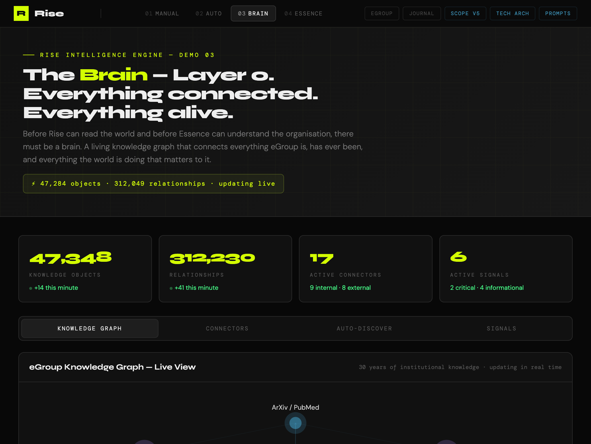
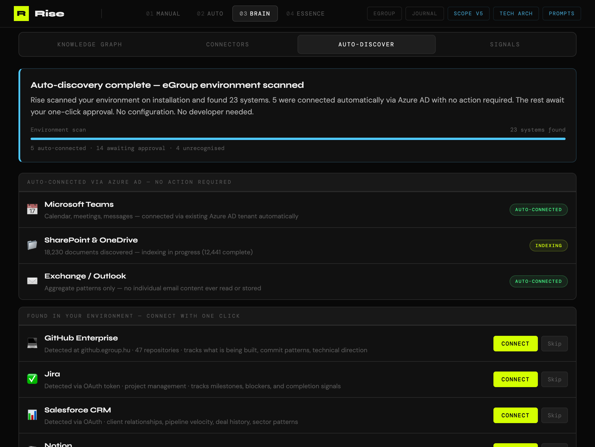
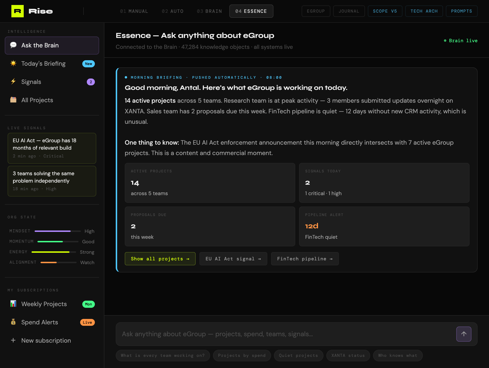

The call with Antal changed everything
Entry 03 ended with two working demos and a scope document at V3. The intelligence engine was real. The content pipeline worked. Antal had seen it and loved the direction.
But the call that followed Entry 03 reframed the entire product. Antal's direction was clear: Rise needed to look inward as well as outward. Not just reading the world to create content — but reading the organisation to understand itself.
"What if Rise didn't just know what the world was saying — but knew what the company was actually doing, thinking, and working on, right now, today?"
That question rewrote the architecture. And then, as we dug into what that meant, a more fundamental question surfaced: before Rise can read anything — the world or the organisation — what does it actually know? Where does all that knowledge live? How does it connect?
The answer was Layer 0. The Brain.
Layer 0 — The Brain
The most important architectural decision in the entire Rise build happened in this session: adding a knowledge graph as the foundation layer everything else sits on.
Not a database. Not a data warehouse. A knowledge graph — because a database stores records and a knowledge graph stores relationships. That difference is everything.
In a database, a research paper is a record: title, author, date, content. In the Brain, that same paper is a node connected to the researcher who wrote it, the project it came from, the client it was presented to, the external publications addressing the same topic, the regulation it addresses, and the three other internal projects working on adjacent problems without knowing it. That web of relationships is what makes intelligence possible.

The Brain does four things continuously: Normalise — everything from any source becomes a structured knowledge object. Connect — relationships between objects are identified and maintained automatically. Index — everything is semantically searchable by meaning, not keywords. Signal — when something changes that matters, the Brain surfaces it without being asked.
Auto-Discovery — setup in 30 minutes
One of the most important product decisions was how setup works. Most enterprise software takes weeks to implement. Rise takes 30 minutes — because when installed, it scans the environment it has been deployed into and tells you what it found.

Azure AD alone connects every Microsoft 365 service instantly. OAuth token scanning finds 40+ SaaS tools without any user action. For anything unrecognised, the admin describes it in plain English and Rise builds the connector. The commercial significance: this eliminates the professional services cost that kills most enterprise software deals.
Dual consciousness — Rise and Essence
Versions 1 through 3 built Rise as a single outward-facing engine. This session gave it a second engine — Essence — that faces inward. Together they make eGroup fully aware of itself and its world simultaneously.
Voice Profiles — content that sounds like a person
Also added in V4: Voice Profiles. Rise can generate content in the exact tone, rhythm, vocabulary, and character of a specific named person. Not a brand template. The actual person — learned from their real writing and refined by every edit they make. A LinkedIn post that sounds authentically like Antal wrote it, not like a brand account.
The chat is the product
Perhaps the most important UX decision in the entire product came from a simple observation: everyone already knows how to use a chat window. Dashboards require navigation, training, and memory. A chat window requires nothing — you open it and ask what you want to know.
The chat window is the primary interface. The dashboard is where you go when you need it. The chat is where you live. Sidebar left for navigation. Chat right, dominant, full height.

The morning briefing arrives automatically — already there when you open it. What every team is working on. Active signals. What needs attention. Then the chat sits ready for any question: "Show me all projects over €50k with who authorised them." "Why is the FinTech pipeline quiet?" "Who in eGroup knows the most about post-quantum security?"
Every answer shows its sources — which systems the Brain queried, how many objects were retrieved, confidence level. The user can click through to the underlying data at any time. This is the interface people will actually use every day.
Intelligence Subscriptions
Users can also define their own intelligence feeds. Describe what you want to track in plain English. Choose a cadence. Rise delivers it automatically, forever. A CFO sets up weekly project spend tracking. A research lead sets up real-time alerts for new publications in their domain. A sales director sets up daily pipeline anomaly detection. Created once. Works forever.
Three documents — one complete specification
The scope documents were split this session into three distinct companion documents — each serving a different audience, each with a different level of depth.
The Prompt Architecture deserves particular mention. Prompt quality is product quality — the difference between a Rise that generates plausible content and one that generates content people actually share comes down to how well the prompts are designed. Having them specified, versioned, and tested as first-class artefacts is what will allow eGroup's engineering team to build exactly what was designed rather than improvising their way to something that almost works.
Four demos. Four layers of Rise.
At the end of this session, Rise has four working demonstrations — each showing a different layer of the platform, each progressively deeper into what Rise actually is.
Demos 03 and 04 work from the live GitHub Pages URLs — they can be shared directly with Antal, eGroup's engineering team, or anyone else without needing a proxy running locally. That matters for what comes next.
From specification to build
The architecture is specified. The demos prove the concepts work. The three documents give eGroup's 50 engineers everything they need to begin building.
The next significant session will focus on taking what has been built — the demos, the specification, the prompt library — and preparing it for a formal handover to the engineering team. That means building the eGroup website inner pages, refining the demo suite based on feedback, and beginning the conversation about Phase 1 build priorities.
The foundation is solid. The Brain architecture is the most important decision Rise has made — once built, the accumulated knowledge compounds every day. The switching cost grows. The intelligence deepens. Rise becomes genuinely irreplaceable.
"A database answers questions you already know to ask. A knowledge graph surfaces answers to questions nobody thought to ask."